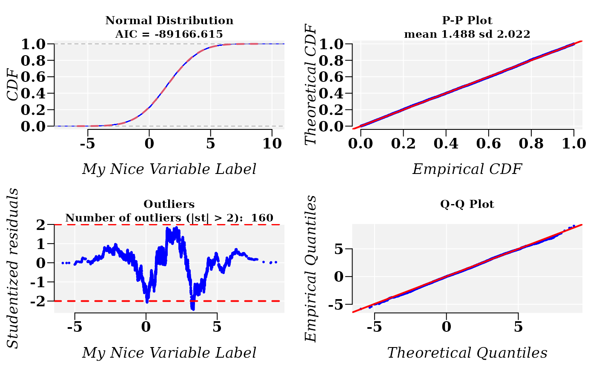
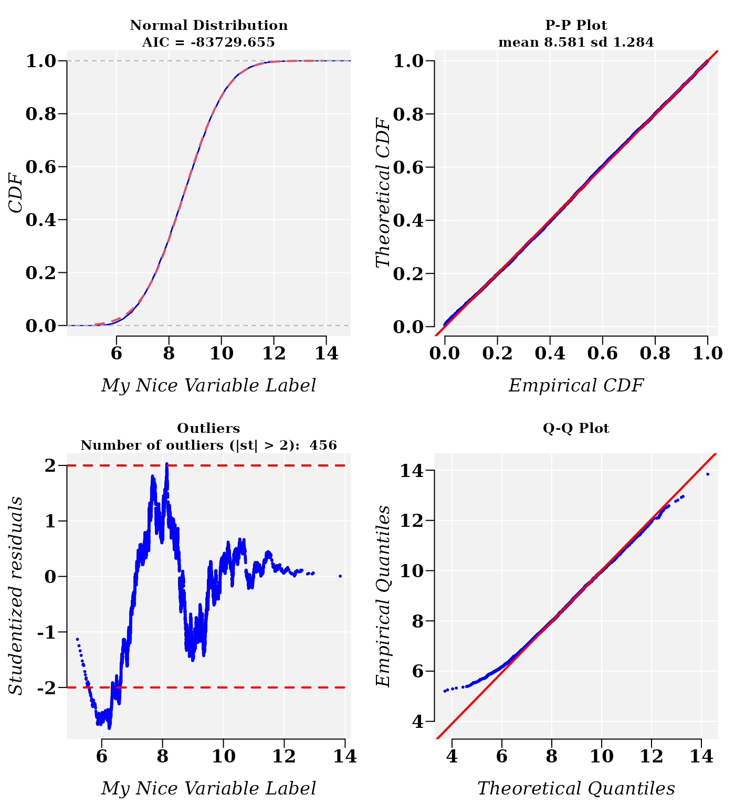

vignettes/usefr.Rmd
usefr.RmdAbstract
Package ‘usefr’ is collection of functions for statistical analysis of nonlinear trends and corresponding goodness-of-fit test. Herein, a fast starting introduction is provided.
Install R dependencies:
if (!requireNamespace("BiocManager")) install.packages("BiocManager")
BiocManager::install()
BiocManager::install(c("BiocParallel","minpack.lm", "numDeriv", "copula",
"mclust", "nls2", "cubature", "mixdist"),
dependencies=TRUE)Install ‘userfr’:
BiocManager::install("genomaths/usefr")Load the libraries needed:
Usually the parameter estimation of a cumulative distribution function (CDF) are accomplished using the corresponding probability density function (PDF). Different optimization algorithms can be used to accomplished this task and different algorithms can yield different estimated parameters. However, the CDF is required to accomplish any useful prediction of the probability of an event described by PDF. Hence, to bypass the intermediate numerical errors, why not try to directly fit the CDF? After all, our interest is on concrete probability estimations for experimentally observed events and, additionally, the ultimate goodness-of-fit test (like Kolmogorov-Smirnov test) are not based on the PDF but on CDF.
Let us simulate random samples from a specified Normal and Weibull distributions. To make reproducible this example, we set a seed.
set.seed(1)
## Parameters
mean = 1.5
sd = 2
shape = 3.1
scale = 4
mu = 5
## Simulating samples
x1 = rnorm(10000, mean = mean, sd = sd)
x2 = rweibull3p(10000, shape = shape, scale = scale, mu = mu)
dt <- data.frame(x1 = x1, x2 = x2)
dt[1:10,]## x1 x2
## 1 0.2470924 9.614864
## 2 1.8672866 10.131587
## 3 -0.1712572 9.943873
## 4 4.6905616 9.209429
## 5 2.1590155 9.916419
## 6 -0.1409368 8.465699
## 7 2.4748581 10.111047
## 8 2.9766494 8.629156
## 9 2.6515627 9.215230
## 10 0.8892232 9.227076
p1 <- ggplot(data = dt, aes(x1)) +
geom_histogram(data = dt, aes(y=after_stat(density)), binwidth = 1,
colour = "black", fill = "skyblue", na.rm=TRUE) +
stat_function(fun = dnorm, n = 101, col = "red",
args = list(mean = mean, sd = sd), linewidth = 1) +
theme_gray(base_family = "serif", base_size = 14) +
annotate(geom = "text", x = 7, y = 0.16, size = 6,
label = 'bolditalic(N(1.5,2))',
family = "serif", color = "blue", parse = TRUE)
p2 <- ggplot(data = dt, aes(x2)) +
geom_histogram(data = dt, aes(y=after_stat(density)), binwidth = 1,
colour = "black", fill = "skyblue", na.rm=TRUE) +
#xlim(0,20) + ylim(0,0.23) +
stat_function(fun = dweibull3p, n = 101, col = "red",
args = list(shape = shape, scale = scale, mu = mu),
linewidth = 1) +
theme_gray(base_family = "serif", base_size = 14) +
annotate(geom = "text", x = 12, y = 0.23, size = 6,
label = 'bolditalic(W(3.1, 4, 5))',
family = "serif", color = "blue", parse = TRUE)
grid.arrange(p1, p2, nrow = 1)Notice that the above drawn densities are, in fact, empirical density estimations, based on in algorithmic kernel density estimation approaches. A typical situation found with experimental data sets is that frequently we assume that sample is taken from a population that follows normal distribution when in fact the population follows a Weibull distribution. Indeed, a sample of a variable following Weibull distribution can fit normal distribution model.
After the application of function fitCDF, results suggest that variable x1, sampled from a population following normal distribution, fits the normal distribution model:
cdfp <- fitCDF(dt$x1,
distNames = c("Normal", "Weibull"), xlabel = "My Nice Variable Label",
plot = T, font.lab = 3, font = 2, font.axis = 2, family = "serif",
cex.lab = 1.3, cex.axis = 1.3
)##
## *** Fitting Normal distribution ...## .Fitting Done.##
## *** Fitting Weibull distribution ...## .Fitting Done.
## * Estimating Studentized residuals for Normal distribution
## * Plots for Normal distribution...
The residual sum-of-squares is lower for the normal distribution model:
cdfp$fit## $Normal
## Nonlinear regression via the Levenberg-Marquardt algorithm
## parameter estimates: 1.4882826440358, 2.0217555652647
## residual sum-of-squares: 3.329e-07
## reason terminated: Relative error in the sum of squares is at most `ftol'.
##
## $Weibull
## Nonlinear regression via the Levenberg-Marquardt algorithm
## parameter estimates: 0.738316839041448, 1.86244354595781
## residual sum-of-squares: 0.3615
## reason terminated: Relative error in the sum of squares is at most `ftol'.The application of a Monte Carlo GOF test, accomplished with function mcgoftest, support the results of the previous nonlinear regression model:
mcgoftest(varobj = dt$x1, distr = "norm", pars = c(1.5, 2), num.sampl = 500,
sample.size = 1000, num.cores = 1)## *** Permutation GoF testing based on Kolmogorov-Smirnov statistic ( parametric approach ) ...## KS.stat.D mc_p.value KS.stat.p.value sample.size num.sampl
## 8.022461e-03 1.000000e+00 5.404925e-01 1.000000e+03 5.000000e+02
mcgoftest(varobj = dt$x1, distr = "weibull", pars = c(1.5, 2), num.sampl = 500,
sample.size = 1000, num.cores = 1)## *** Permutation GoF testing based on Kolmogorov-Smirnov statistic ( parametric approach ) ...## KS.stat.D mc_p.value KS.stat.p.value sample.size num.sampl
## 2.307777e-01 1.996008e-03 0.000000e+00 1.000000e+03 5.000000e+02
cdfp <- fitCDF(dt$x2,
distNames = c("Weibull", "3P Weibull", "Normal"),
xlabel = "My Nice Variable Label",
plot = TRUE, plot.num = 2, font.lab = 3, font = 2,
font.axis = 2, family = "serif", cex.text = 1.2,
cex.main = 1.4, cex.lab = 1.4, cex.axis = 1.4
)##
## *** Fitting Weibull distribution ...## .Fitting Done.##
## *** Fitting 3P Weibull distribution ...## .Fitting Done.##
## *** Fitting Normal distribution ...## .Fitting Done.
## * Estimating Studentized residuals for 3P Weibull distribution
## * Plots for 3P Weibull distribution...## * Estimating Studentized residuals for Normal distribution
## * Plots for Normal distribution...
The residual sum-of-squares is lower for the 3-parameter Weibull distribution model. However, the normal distribution model is also plausible:
cdfp$fit## $`3P Weibull`
## Nonlinear regression via the Levenberg-Marquardt algorithm
## parameter estimates: 3.29233717035411, 4.18947813254595, 4.8319411012721
## residual sum-of-squares: 4.658e-08
## reason terminated: Relative error in the sum of squares is at most `ftol'.
##
## $Normal
## Nonlinear regression via the Levenberg-Marquardt algorithm
## parameter estimates: 8.58110547402313, 1.28397778995159
## residual sum-of-squares: 1.234e-06
## reason terminated: Relative error in the sum of squares is at most `ftol'.
##
## $Weibull
## Nonlinear regression via the Levenberg-Marquardt algorithm
## parameter estimates: 7.74202390708428, 9.05608704675257
## residual sum-of-squares: 0.0002622
## reason terminated: Relative error in the sum of squares is at most `ftol'.The Akaike information criteria suggest that the Weibull probability model is the best fitted model, which is confirmed (by a narrow margin) and by the cross-validation correlation coefficient R (R.Cross.val).
data.frame(
Weibull3P = cdf_crossval(
model = cdfp$bestfit, q = dt$x2),
'AIC-Weibull3P' = cdfp$aic$AIC[1],
Normal = cdf_crossval(
model = cdfp$fit$Normal, q = dt$x2),
'AIC-Normal' = cdfp$aic$AIC[2],
row.names = NULL
)## Weibull3P AIC.Weibull3P Normal AIC.Normal
## 1 0.9999828 -99067.35 0.9999312 -83729.65The Monte Carlo GOF test is accomplished with function mcgoftest.
Let’s take the parameter values for the normal distribution model of variable x2, which was sample from a population following a Weibull distribution.
summary(cdfp$fit$Normal)##
## Parameters:
## Estimate Std. Error t value Pr(>|t|)
## mean 8.5811055 0.0001427 60137 <2e-16 ***
## sd 1.2839778 0.0002522 5091 <2e-16 ***
## ---
## Signif. codes: 0 '***' 0.001 '**' 0.01 '*' 0.05 '.' 0.1 ' ' 1
##
## Residual standard error: 1.111e-05 on 9998 degrees of freedom
## Number of iterations to termination: 14
## Reason for termination: Relative error in the sum of squares is at most `ftol'.The application of a Monte Carlo GOF test, accomplished with function mcgoftest, support the modeling of variable x2 with a normal distribution model:
mcgoftest(varobj = dt$x2, distr = "norm", pars = c(8.6, 1.3), num.sampl = 500,
sample.size = 1000, num.cores = 1)## *** Permutation GoF testing based on Kolmogorov-Smirnov statistic ( parametric approach ) ...## KS.stat.D mc_p.value KS.stat.p.value sample.size num.sampl
## 1.131159e-02 1.000000e+00 1.546859e-01 1.000000e+03 5.000000e+02Both GOF, the Monte Carlo and classical Kolmogorov-Smirnov (KS), did not rejected normal distribution model. In fact, the KS statistics are quite close.
mcgoftest(varobj = dt$x2, distr = "weibull3p",
pars = c(shape = shape, scale = scale, mu = mu),
num.sampl = 500, sample.size = 1000, num.cores = 1)## *** Permutation GoF testing based on Kolmogorov-Smirnov statistic ( parametric approach ) ...## KS.stat.D mc_p.value KS.stat.p.value sample.size num.sampl
## 1.128657e-02 1.000000e+00 1.564428e-01 1.000000e+03 5.000000e+02The Anderson–Darling statistic reject the normal distribution model of variable x2
mcgoftest(varobj = dt$x2, distr = "norm", pars = c(8.6, 1.3),
num.sampl = 500, stat = "ad",
sample.size = 1000, num.cores = 1)## *** Permutation GoF testing based on Anderson–Darling statistic ( parametric approach ) ...## AD.stat mc_p.value sample.size num.sampl
## 3.959813e+00 1.197605e-02 1.000000e+03 5.000000e+02
mcgoftest(varobj = dt$x2, distr = "weibull3p", stat = "ad",
pars = c(shape = shape, scale = scale, mu = mu),
num.sampl = 500, sample.size = 1000, num.cores = 1)## *** Permutation GoF testing based on Anderson–Darling statistic ( parametric approach ) ...## AD.stat mc_p.value sample.size num.sampl
## 1.4937177 0.1656687 1000.0000000 500.0000000Users can read the available tutorials see applications, e.g., on mixture distribution models.
Here is the output of sessionInfo() on the system on
which this document was compiled running pandoc 2.19.2:
## R version 4.2.2 Patched (2022-11-10 r83330)
## Platform: x86_64-pc-linux-gnu (64-bit)
## Running under: Ubuntu 22.04.1 LTS
##
## Matrix products: default
## BLAS: /usr/lib/x86_64-linux-gnu/blas/libblas.so.3.10.0
## LAPACK: /usr/lib/x86_64-linux-gnu/lapack/liblapack.so.3.10.0
##
## locale:
## [1] LC_CTYPE=en_US.UTF-8 LC_NUMERIC=C
## [3] LC_TIME=en_US.UTF-8 LC_COLLATE=en_US.UTF-8
## [5] LC_MONETARY=en_US.UTF-8 LC_MESSAGES=en_US.UTF-8
## [7] LC_PAPER=en_US.UTF-8 LC_NAME=C
## [9] LC_ADDRESS=C LC_TELEPHONE=C
## [11] LC_MEASUREMENT=en_US.UTF-8 LC_IDENTIFICATION=C
##
## attached base packages:
## [1] stats graphics grDevices utils datasets methods base
##
## other attached packages:
## [1] gridExtra_2.3 ggplot2_3.4.0 usefr_0.1.1
##
## loaded via a namespace (and not attached):
## [1] mclust_6.0.0 Rcpp_1.0.10 ADGofTest_0.3
## [4] mvtnorm_1.1-3 lattice_0.20-45 rprojroot_2.0.3
## [7] digest_0.6.31 utf8_1.2.3 R6_2.5.1
## [10] stats4_4.2.2 pcaPP_2.0-3 evaluate_0.20
## [13] highr_0.10 pillar_1.8.1 rlang_1.0.6
## [16] cubature_2.0.4.6 rstudioapi_0.14 jquerylib_0.1.4
## [19] Matrix_1.5-3 rmarkdown_2.20 nls2_0.3-3
## [22] pkgdown_2.0.7 labeling_0.4.2 textshaping_0.3.6
## [25] desc_1.4.2 proto_1.0.0 BiocParallel_1.32.5
## [28] stringr_1.5.0 munsell_0.5.0 compiler_4.2.2
## [31] numDeriv_2016.8-1.1 xfun_0.37 pkgconfig_2.0.3
## [34] systemfonts_1.0.4 gsl_2.1-8 htmltools_0.5.4
## [37] mixdist_0.5-5 tidyselect_1.2.0 tibble_3.1.8
## [40] codetools_0.2-19 stabledist_0.7-1 fansi_1.0.4
## [43] pspline_1.0-19 dplyr_1.1.0 withr_2.5.0
## [46] grid_4.2.2 jsonlite_1.8.4 gtable_0.3.1
## [49] lifecycle_1.0.3 magrittr_2.0.3 scales_1.2.1
## [52] cli_3.6.0 stringi_1.7.12 cachem_1.0.6
## [55] farver_2.1.1 fs_1.6.1 bslib_0.4.2
## [58] ragg_1.2.5 vctrs_0.5.2 generics_0.1.3
## [61] tools_4.2.2 copula_1.1-2 glue_1.6.2
## [64] purrr_1.0.1 parallel_4.2.2 fastmap_1.1.0
## [67] yaml_2.3.7 colorspace_2.1-0 memoise_2.0.1
## [70] minpack.lm_1.2-3 knitr_1.42 sass_0.4.5